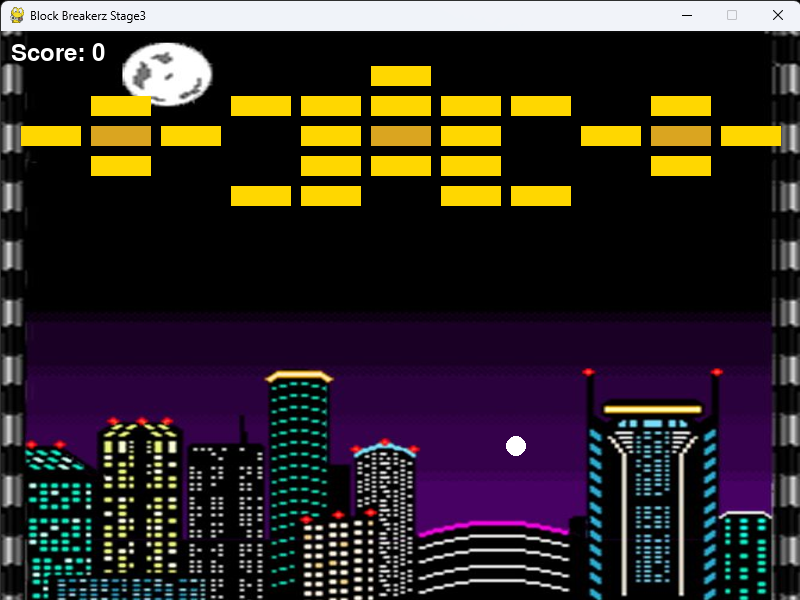
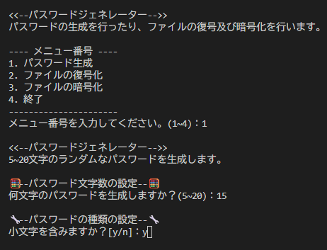
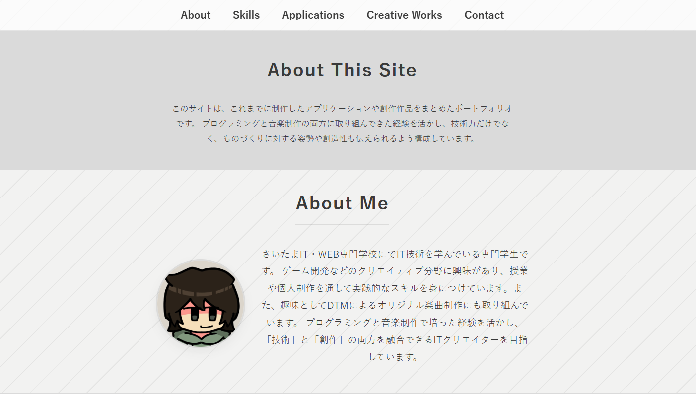

シフト管理アプリ
チームで制作したシフト管理を効率化するためのWebアプリケーションです。従業員がシフトの出勤希望や休暇申請を効率的に管理できることを目的としています。
- 使用技術HTML / JavaScript / Google Apps Script
- リンクGitHub
Programming × Music × Creative
このサイトは、これまでに制作したアプリケーションや創作作品をまとめたポートフォリオです。 プログラミングと音楽制作の両方に取り組んできた経験を活かし、技術力だけでなく、ものづくりに対する姿勢や創造性も伝えられるよう構成しています。
さいたまIT・WEB専門学校にてIT技術を学んでいる専門学生です。 ゲーム開発などのクリエイティブ分野に興味があり、授業や個人制作を通して実践的なスキルを身につけています。また、趣味としてDTMによるオリジナル楽曲制作にも取り組んでいます。 プログラミングと音楽制作で培った経験を活かし、「技術」と「創作」の両方を融合できるITクリエイターを目指しています。
プログラミング言語やツールの習熟度を5段階で評価しています。
★の数が多いほど習熟度が高いことを示します。
これまでに制作したWebアプリケーションやゲームなどの作品を紹介します。
各作品の概要、使用技術、GitHubへのリンクなどを掲載しています。
チームで制作したシフト管理を効率化するためのWebアプリケーションです。従業員がシフトの出勤希望や休暇申請を効率的に管理できることを目的としています。

チームで制作したブロック崩しゲームです。Pygameを使用して開発し、ゲームのルールやUIデザインにこだわりました。

CLIで動作するパスワードジェネレータです。ユーザーが指定した条件に基づいて、ランダムなパスワードを生成します。生成したパスワードを簡易的に暗号化する機能も備えています。

これまでに制作したオリジナル楽曲を幾つか紹介します。
各楽曲のジャンル、BPM、簡単な説明とともに、試聴できるようにしています。
Track 01
Track 02
Track 03